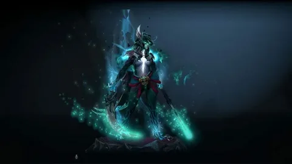

Phantom Assassin — смертоносный герой ближнего боя, полагающийся на критические удары и внезапные нападения. Она — воплощение мести и быстрой расправы, чья цель — уничтожить врагов прежде, чем они успеют среагировать.
Основные характеристики:
- Тип атаки: Ближний бой
- Роль: Керри, Гибкость
- Сила: Ловкость
Основные способности:
- Stifling Dagger (Заглушающий кинжал): Бросает кинжал, наносящий урон и замедляющий цель. Если цель находится вне радиуса атаки, кинжал летит к ней.
- Phantom Strike (Призрачный удар): Мгновенно телепортируется к выбранной цели и совершает атаку. Если цель — враг, получает бонус к скорости атаки.
- Coup de Grâce (Удар милосердия): Пассивная способность, дающая очень высокий шанс нанести мощный критический удар.
- Ability Draft (Draft): [Пример для демонстрации, в реальности у PA нет такой способности], но она бы могла выбирать способности или менять стиль игры.
Лор Phantom Assassin
Nortstromund, известная многим как Phantom Assassin, — это воплощение чистого насилия. Воспитанная в монастыре, где жизнь и смерть — лишь две стороны одной медали, она стала совершенным инструментом для тех, кто жаждет скорой и безжалостной вендетты. Ее путь — смертельный танец, когда меч мелькает, оставляя за собой лишь тишину.